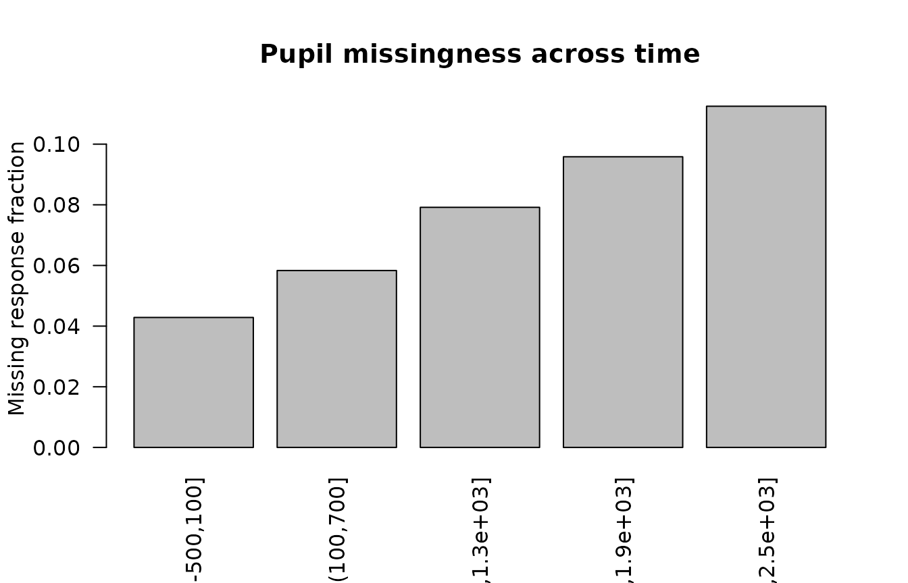

Measurement Uncertainty and Missing Pupil Data
Source:vignettes/measurement-error-and-missing-pupil-data.Rmd
measurement-error-and-missing-pupil-data.Rmd
library(gp3bayes)
sim <- simulate_advanced_pupil_timecourse(
n_participants = 10,
trials_per_participant = 4,
time_points = 31,
missing_fraction = 0.08,
measurement_error_sd = 0.02,
seed = 3030
)Measurement uncertainty is declared, not silently corrected
measurement <- create_pupil_measurement_model(
baseline_error = "baseline_se",
luminance_error = "luminance_se",
response_error = "pupil_se"
)
missingness <- create_pupil_missingness_spec(
response = "model",
predictors = character(),
assumptions = "MAR"
)
spec <- specify_advanced_pupil_timecourse_model(
sim$data,
temporal_structure = "smooth",
family = "gaussian",
autocorrelation = "none",
covariates = c("baseline_pupil", "luminance"),
measurement_model = measurement,
missingness_model = missingness
)
measurement_audit <- audit_pupil_measurement_model(spec)
measurement_audit
#> <gp3bayes_pupil_measurement_audit_05>
#> Status: pass
#> variable error_column role missing_fraction nonpositive_fraction
#> baseline baseline_se predictor 0 0
#> luminance luminance_se predictor 0 0
#> <pupil response> pupil_se response 0 0
#> status
#> pass
#> pass
#> pass
plot_pupil_measurement_uncertainty(measurement_audit)
missing_audit <- audit_pupil_missingness(spec)
missing_audit
#> <gp3bayes_pupil_missingness_audit>
#> Assumption: MAR
#> variable n missing missing_fraction role
#> pupil 1240 95 0.0766129 response
plot_pupil_missingness(missing_audit)
The MAR label is an assumption required for this model class. Neither the audit nor a successful model fit proves that MAR holds.
Joint brms translation
translated <- translate_advanced_pupil_model_to_brms(spec)
translated
fit <- fit_advanced_pupil_model_backend(spec, backend = "cmdstanr")Predictor uncertainty is represented through latent mi()
submodels. When modeled response missingness and known response
uncertainty are declared together, the response uses the single
mi(sdy = ...) mechanism so missingness and known
measurement SD are represented coherently; without modeled response
missingness, known response SD uses se(..., sigma = TRUE).
gp3bayes 0.5 does not implement MNAR selection or pattern-mixture
models.